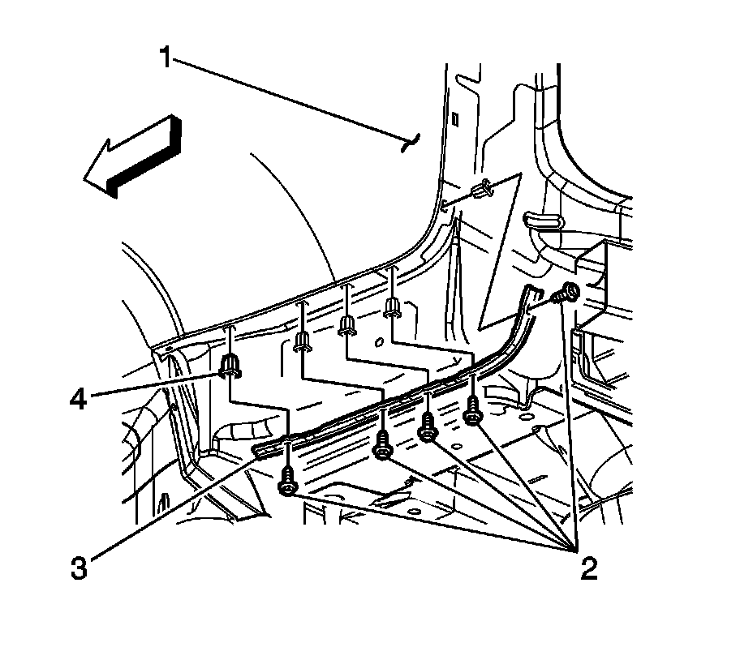

Rear Bumper: Service and Repair
Rear Bumper Bracket Replacement
Removal Procedure
1.Pull back the rear bumper fascia to access the rear bumper bracket. Refer to Rear Bumper Fascia Replacement Rear Bumper Fascia Replacement .

2.Remove the bolts (2) securing the bumper bracket (3) to the quarter panel (1).
3.Remove the rear bumper bracket (3).
4.Remove the retainers (4) and discard if the retainer is stripped.
Installation Procedure
1.Install new retainers (4), if necessary, and verify the retainers are secure to the quarter panel.
2.Install the bumper bracket (3) to the quarter panel (1).
Notice:Refer to Fastener Notice .
3.Install the bolts (2) to secure the bumper bracket (3) to the quarter panel.
TightenTighten the bumper bracket bolts to 3 N �m (27 lb in).
4.Install the rear bumper fascia. Refer to Rear Bumper Fascia Replacement Rear Bumper Fascia Replacement .